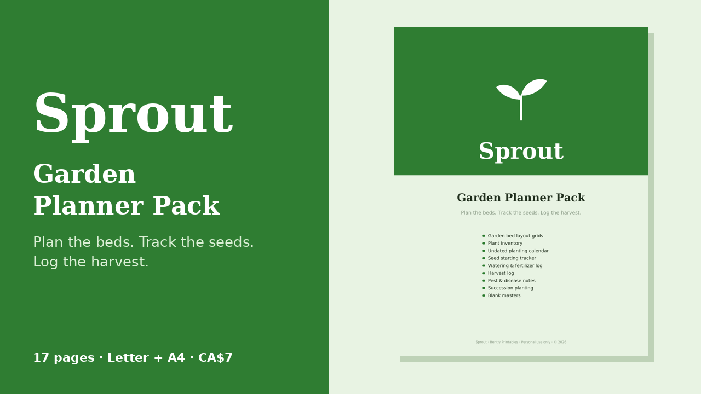

Free: Garden bed layout grid
One printable page (US Letter) to map a bed square by square, with a plant key.
Download the free PDF
The full pack (17 pages, Letter + A4)
- Garden bed layout grids
- Plant & seed inventory
- Undated planting calendar
- Seed starting tracker
- Watering & fertilizer log
- Harvest log
- Pest & disease notes
- Succession planting & crop rotation
- Blank masters
Organizing tool only — not horticultural or agricultural advice. Purchase: Gumroad. © 2026 Bently Printables.